어제까지 4,600m³의 토사를 퍼냄
25t 덤프기준 300대 분량
이제 지룽 검문소까지
단 1.15km만 남았음
어떻게했냐고?
길 만든다고 무경, 중국군, 경찰 등등등
일단 제복입은 새끼들 죄다 끌어모은 뒤
24시간 내내 3교대로 용접시킴
용접 하는 이유
토양이 완전 유실돼서
저걸 밑에 깔고 위에 흙을 덮어야 안 무너짐
물론 작업환경이 안전한건 당연히 아니라
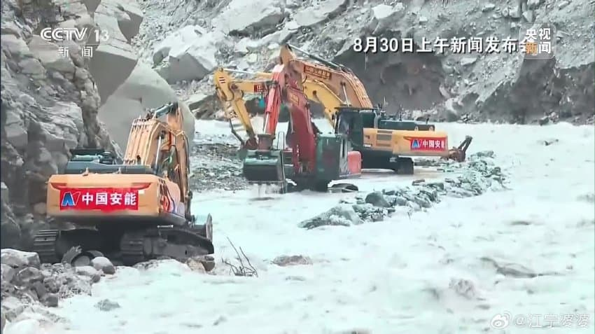
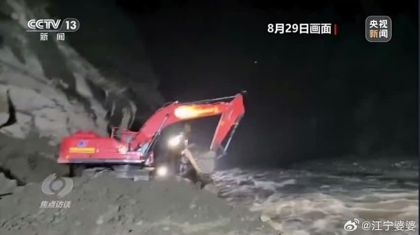
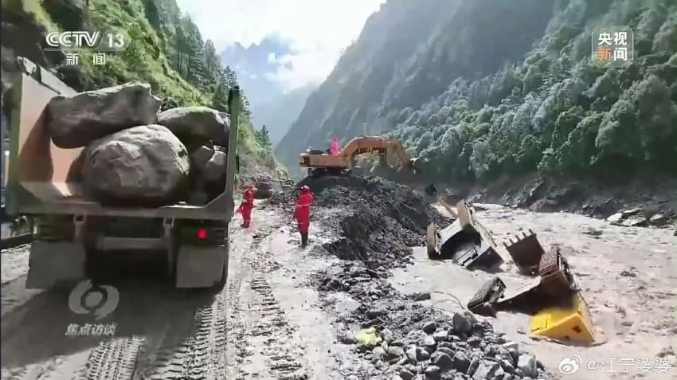
중국 피셜 포크레인 2대가 유실될 정도로
현장은 매우 위험한 환경임
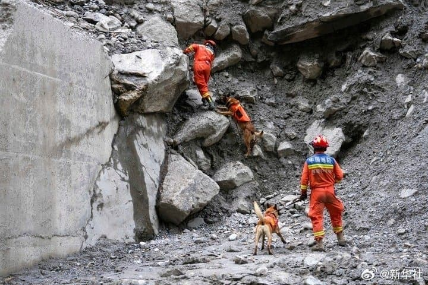
검문소 근처로 갈수록
토사가 엄청나게 질척거려서
투입가능한 장비와 인력이 제한되는 데다가
현장 구조대원들의 피로도가 누적되는 중
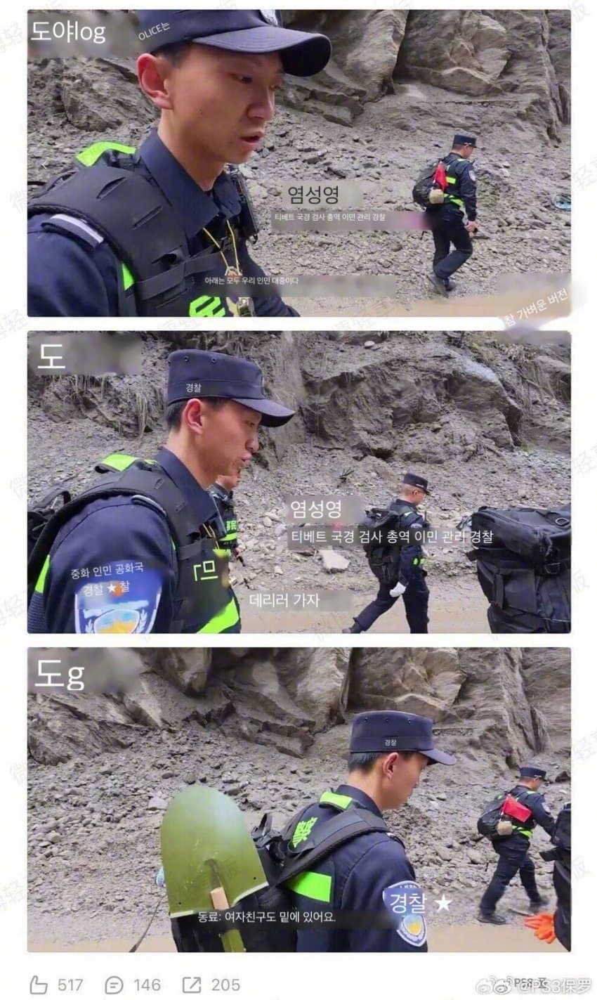
심지어 여자친구가 매몰당한
경찰관도 구조임무에 동원됨
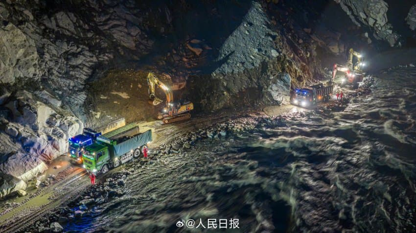
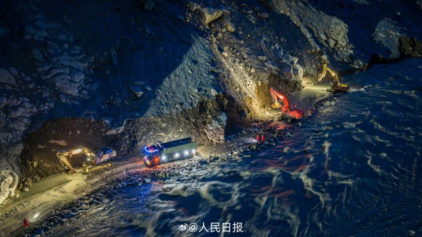
급류 옆에 붙어서 24시간 내내
이 지랄로 파댄 결과
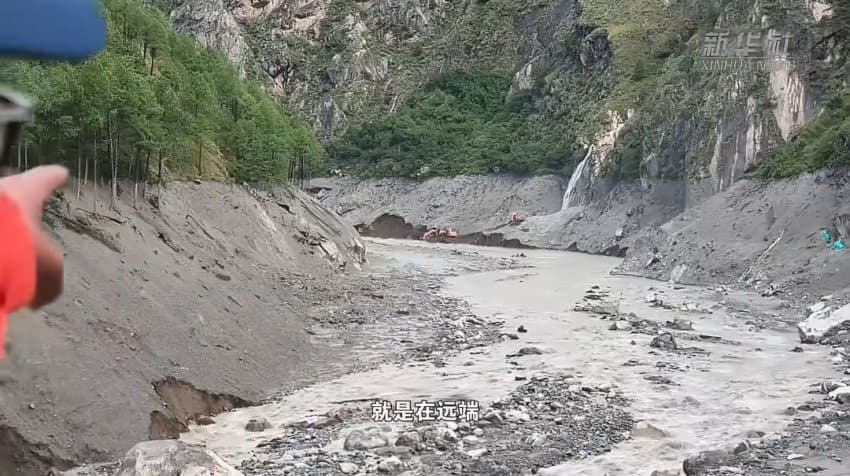
현장에 파견된 신화통신 기자가
포크레인을 육안으로도
볼수있는데까지 접근함
기자가 있는곳이 어디냐면
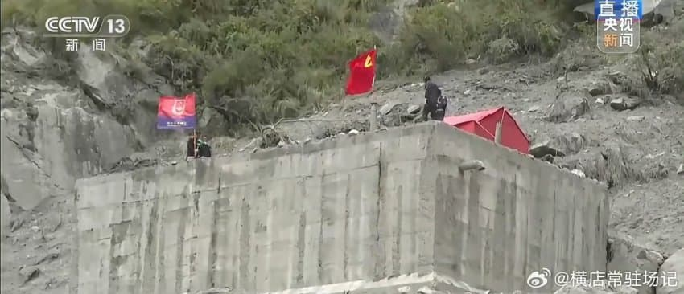
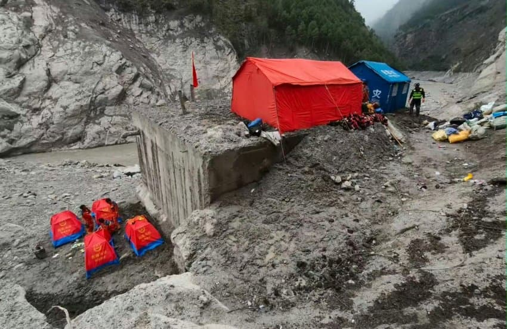
유일하게 홍수에서
살아남은 콘크리트 더미임
여기다 텐트를 치고
현장 베이스캠프로 쓰는 중
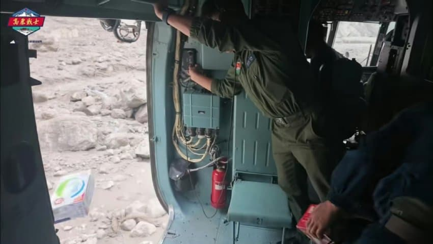
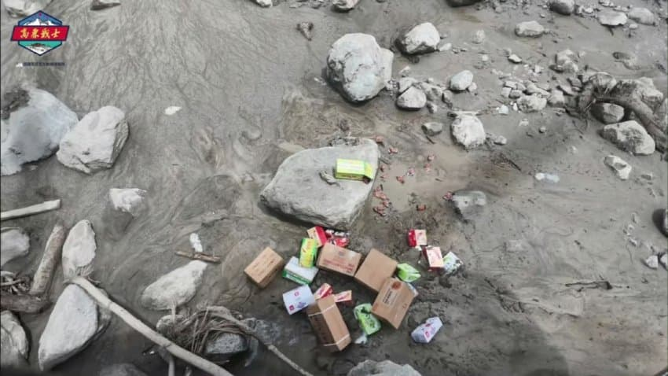
며칠 전부터는 인근에 헬기 착륙장도 만들어서
주기적으로 보급품과 추가 인력을 수송하고 있음
처음엔 이렇게 대충 던지다
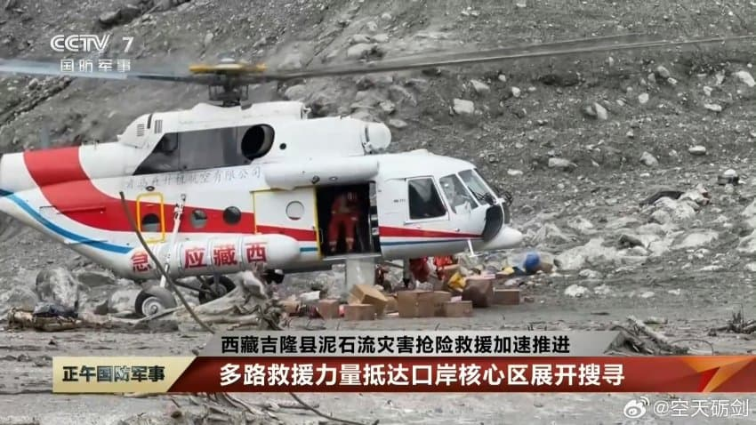
이젠 노하우가 생겼는지 착륙도 함
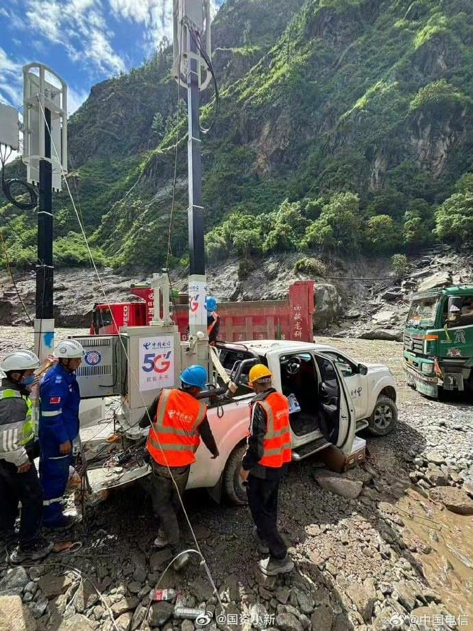
중국통신 소속
이동식 기지국 차량이라고 함
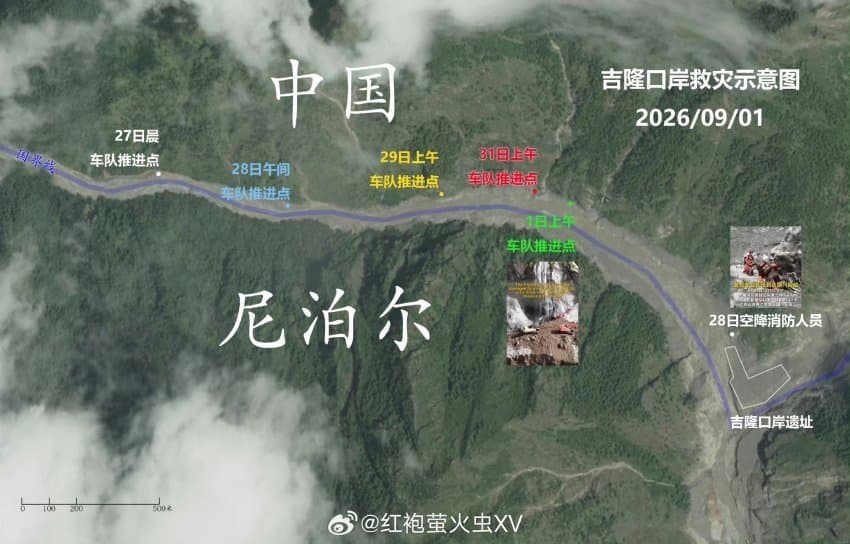
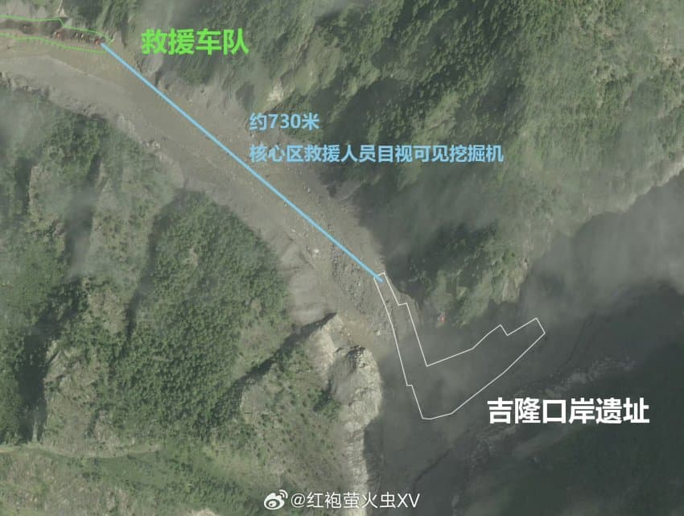
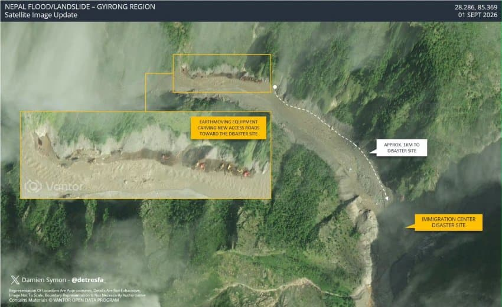
현장 지도라고 함
약 600~700m 남은듯
군사갤 펌
예전에는 사람들 살아있을지도 모르는 열차 하루만에 파묻지않았나?ㅋㅋㅋㅋ 이번에 사고난곳은 경제적 손실이 커서 그런가 열심히하네